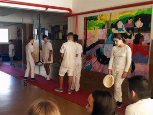
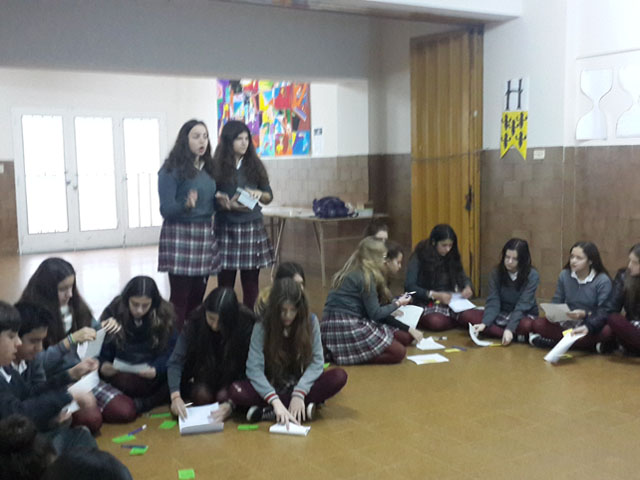
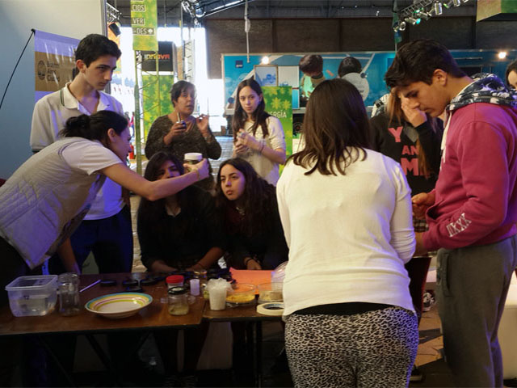
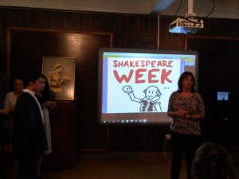
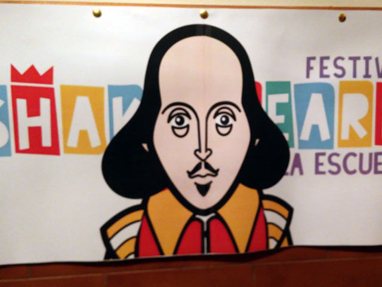

Nuestro colegio secundario
Nuestra propuesta pedagógica se fundamenta en una formación académica sólida, integral, plural, destacando los valores, el aprendizaje innovador, la participación y la creatividad. Buscamos desarrollar habilidades y competencias fundamentales para desenvolverse en el mundo actual, formando ciudadanos responsables, comprometidos, solidarios, con pensamiento crítico, capacidad de resolución de problemas y trabajo en equipo. Esto les permite a nuestros egresados insertarse en el mundo universitario y el mercado laboral sin dificultades.
Título actual que se acredita al finalizar:
BACHILLER BILINGÜE CON ORIENTACIÓN EN ECONOMÍA Y ADMINISTRACIÓN.
Promovemos en nuestros/as estudiantes:
- El deseo de aprender de forma autónoma y responsable.
- Una actitud crítica y reflexiva en forma permanente.
- El trabajo en equipo por proyectos interdisciplinarios.
- La creación de fuertes vínculos con pares, profesores/as y autoridades.
- Habilidades comunicativas diversas, diálogo y expresión a través de diferentes formas.
- La utilización de diferentes herramientas tecnológicas.
- El intercambio de ideas y diferentes puntos de vista. La investigación y el placer del descubrimiento.
- La tolerancia y el respeto hacia los demás.
- El cuidado de sí mismo, de los demás y del medio ambiente.
- El valor de la solidaridad y la construcción de una ciudadanía responsable.
Algunas propuestas que nos identifican:
- Nuestros Proyectos Interdisciplinarios (ABP) se estructuran en 5 ejes por año vinculados al DESCUBRIMIENTO, SOCIALIZACIÓN, INTERACCIÓN, TRANSFORMACIÓN y CREACIÓN, donde el/la estudiante se convierte en protagonista activo/a.
- Proponemos mayor cantidad de horas de clases de matemática, lengua y tecnología de la información, ya que son los pilares para la construcción nuevos conocimientos.
- Tutoría personalizada y permanente en el colegio.
- Deportes: Fútbol, Hockey, Volley, con participación en torneos intercolegiales.
- Fuerte impronta en el Arte: Plástica y Teatro como materia en todos los años.
- Banda de música optativa.
- Salidas, campamentos y viajes educativos.
- Charlas grupales y personalizadas para padres.
- Laboratorio de experiencias físico químicas.
- Aulas digitalizadas y cuentas institucionales de Google Workspace for Education.
- Articulación activa y permanente con universidades y ONG's
- Sostenemos el valor del bilingüismo y la educación digital como herramientas para el desenvolvimiento en el mundo de hoy.
Uno de nuestros principales objetivos es que se incorporen los mejores contenidos, con excelentes materiales, y que los/as alumnos/as posean herramientas digitales que faciliten el aprendizaje de otras ciencias, y el desarrollo de habilidades y competencias necesarias para el desenvolvimiento en la sociedad actual.
Consideramos importante que nuestros futuros egresados cuenten con ventajas competitivas al momento de insertarse en el mercado laboral y/o ingresar a instituciones de formación superior. El Plan de Estudios de nuestra escuela, pondera horas curriculares y extracurriculares con modalidad taller dedicadas exclusivamente a Educación Digital y Tecnología de la Información.
Inglés:
El aprendizaje del inglés en nuestra escuela secundaria bilingüe facilita el desarrollo de las capacidades comunicativas de los/as alumnos/as, amplía su visión del mundo, entrando en contacto real y significativo con otras culturas, desarrollando un sentido de tolerancia y pluralismo.
Es nuestro objetivo proveer a los/as alumnos/as de una herramienta de comunicación efectiva tanto para las relaciones personales como para las relaciones profesionales e internacionales.
Todos los alumnos son preparados para rendir los exámenes internacionales de la Universidad de Cambridge. Dicha universidad entrega los certificados de mayor notoriedad mundial, reconocidos por empleadores y universidades. El colegio secundario ofrece la posibilidad de rendir los siguientes exámenes:
F.C.E.
El ‘First Certificate in English’ es un examen de nivel intermedio alto que corresponde al nivel B2 del Consejo Europeo. Este es un nivel que garantiza el desempeño del candidato en situaciones cotidianas de carácter práctico, tanto en el ámbito estudiantil como en el laboral y comercial.
C.A.E.
El ‘Certificate of Advance English’ se encuentra entre las más altas de las certificaciones otorgadas por Cambridge. Corresponde al nivel C1 del Consejo Europeo. Su aprobación demuestra un nivel de inglés adecuado para la mayoría de los propósitos, incluyendo la interacción social y profesional como los niveles de educación superior y universitaria. Reconoce la habilidad para comunicarse con la mayor confianza y comodidad en todos los ámbitos de la vida diaria.
Los exámenes ofrecidos están graduados externamente en relación con los niveles de la ASOCIACIÓN EUROPEA de EVALUADORES de IDIOMAS y con el “COMMON EUROPEAN FRAMEWORK of REFERENCE FOR LANGUAGES”.